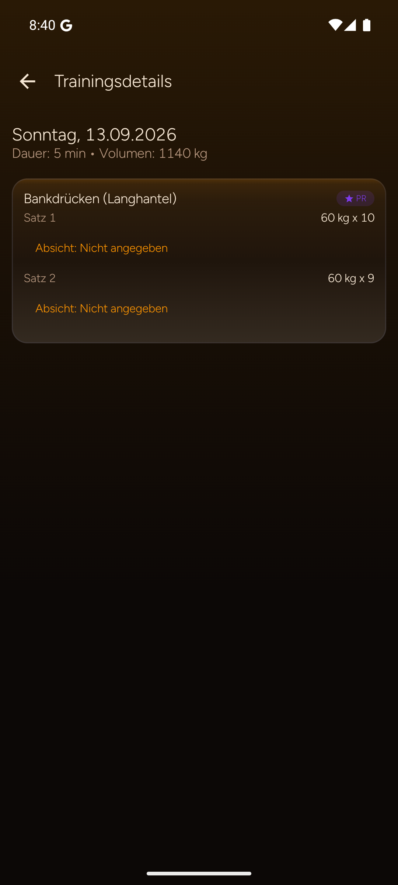

Heute trainiert heißt nicht automatisch neu geplant
Ein Beispiel trennt Planvorgabe und Tagesleistung. Standard bleibt dieses Training speichern; jede Planänderung braucht eine bewusste Wahl.
Vorher · Original
Android / Details
Der Verlauf zeigt gespeicherte Satzdetails. Ein vollständiger appweiter Übernahmeablauf ist im Audit nicht abschließend bestätigt.
Nachher · Entwurf
Vorschlag · offenHeute vs. Plan
Wähle selbst, ob diese Abweichung nur heute gilt oder als Planvorgabe übernommen werden soll.
Standardauswahl: heutiges Training speichern. Keine stille Planänderung.
Vorschlag, kein Befund
Die appweite Funktionslücke ist nicht abschließend bestätigt. Der Screen markiert das offen, statt eine bestehende Funktion zu behaupten.
Nur dieses Training
Die sichere Standardauswahl speichert 60 × 9 für heute. Der Plan bleibt unverändert.
Übernehmen oder selbst bearbeiten
Ausgewählte Vorgaben können bewusst übernommen werden; alternativ führt ein klarer Weg in den Planeditor.
Keine stillen Planänderungen. Jede Übernahme ist sichtbar, optional und überprüfbar.